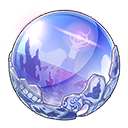

추천 광추
초보자 임무 시작 전
효과 명중 +40% · 에너지 회복
효과 자세히
5중첩 · 방어력 감소 적 공격 → 에너지 +8pt. 첫 공격 전 블랙 스완·페라 등 방어력 감소 선적용.
필요한 건 기다림뿐
공격 시 속도 중첩 · 감전 추가
효과 자세히
1중첩 · 피해 +24%, 공격당 속도 +4.8%(3스택 +14.4% · 기초 100 기준 전투 +14.4). 명중 → 흐름(감전) · 공격력 60% 번개 지속 피해.
땀방울처럼 빛나는 결심
함락 → 적 방어력 −16%
효과 자세히
5중첩 · 함락 없는 적에 기본 확률 100%, 1턴. 저중첩은 확률·감소량 하락. 효과 명중 별도 확보.
밤 인사와 잠든 얼굴
디버프에 비례해 본인 피해 증가
효과 자세히
5중첩 · 대상 디버프당 본인 피해 +24%(3개 최대 +72%, 지속 피해 포함). 속도·효과 명중·회전 별도.
사냥감의 시선
효과 명중 +40% · 지속 피해 +48%
효과 자세히
5중첩 · 효과 명중 75% 확보용. 추가 에너지 회복 없음.
추천 유물
밤낮의 경계를 나는 매 4 · 바다에 잠긴 루샤카 2
- 머리
 주옵션HP부옵션효과 명중 75%까지 · 속도 · 공격력%
주옵션HP부옵션효과 명중 75%까지 · 속도 · 공격력% - 손
 주옵션공격력부옵션효과 명중 75%까지 · 속도 · 공격력%
주옵션공격력부옵션효과 명중 75%까지 · 속도 · 공격력% - 몸통
 주옵션효과 명중 / 공격력%부옵션효과 명중 75%까지 (주옵션 제외) · 속도 · 공격력% (주옵션 제외)
주옵션효과 명중 / 공격력%부옵션효과 명중 75%까지 (주옵션 제외) · 속도 · 공격력% (주옵션 제외) - 다리
 주옵션속도부옵션효과 명중 75%까지 · 공격력%
주옵션속도부옵션효과 명중 75%까지 · 공격력% - 구체
 주옵션번개 속성 피해 / 공격력%부옵션효과 명중 75%까지 · 속도 · 공격력% (주옵션 제외)
주옵션번개 속성 피해 / 공격력%부옵션효과 명중 75%까지 · 속도 · 공격력% (주옵션 제외) - 매듭
 주옵션에너지 회복효율부옵션효과 명중 75%까지 · 속도 · 공격력%
주옵션에너지 회복효율부옵션효과 명중 75%까지 · 속도 · 공격력%
이 조합을 추천하는 이유
매 4세트 · 필살기 후 행동 게이지 +25%. 루샤카 회복효율 +5% · 카프카 2~4번 → 1번 동료 공격력 +12%(히실렌스·블랙 스완 추천).
깊은 감옥에 수감된 죄수 4 · 즐거움에 취한 바다의 일각 2
- 머리
 주옵션HP부옵션효과 명중 75%까지 · 속도 · 공격력%
주옵션HP부옵션효과 명중 75%까지 · 속도 · 공격력% - 손
 주옵션공격력부옵션효과 명중 75%까지 · 속도 · 공격력%
주옵션공격력부옵션효과 명중 75%까지 · 속도 · 공격력% - 몸통
 주옵션효과 명중 / 공격력%부옵션효과 명중 75%까지 (주옵션 제외) · 속도 · 공격력% (주옵션 제외)
주옵션효과 명중 / 공격력%부옵션효과 명중 75%까지 (주옵션 제외) · 속도 · 공격력% (주옵션 제외) - 다리
 주옵션속도부옵션효과 명중 75%까지 · 공격력%
주옵션속도부옵션효과 명중 75%까지 · 공격력% - 구체

주옵션번개 속성 피해 / 공격력%부옵션효과 명중 75%까지 · 속도 · 공격력% (주옵션 제외) - 매듭
 주옵션공격력% / 에너지 회복효율부옵션효과 명중 75%까지 · 속도 · 공격력% (주옵션 제외)
주옵션공격력% / 에너지 회복효율부옵션효과 명중 75%까지 · 속도 · 공격력% (주옵션 제외)
이 조합을 추천하는 이유
죄수 4세트 · 대상 지속 피해당 방어력 무시 6%(3개 최대 18%). 바다의 일각 공격력 +12% · 전투 공격력 2,400/3,600 이상 → 지속 피해 +12%/+24%.
이 정도면 잘 키웠다
동일 파티·광추 기준 · 조건 [*]
| 스탯 | 추천 스탯 | 준종결 | 종결 |
|---|---|---|---|
| 효과 명중 [*] 고통 행적 · 각 아군 효과 명중 75% → 해당 아군 공격력 +100%. 카프카 마을 75% · 광추 조건 별도. | 마을 75% 이상 | 마을 75% 이상 유지 | 마을 75% 이상 유지 |
| 속도 [*] 전투 160 권장 · 170/180 추가 투자. 전광 1중첩 첫 공격 전 0스택 · 3스택 +14.4. 다른 버프 없이 마을 145.6/155.6/165.6 → 전투 160/170/180. 매 4세트·파티 버프·SP에 따라 순서 조정. | 전투 160+ | 전투 170+ | 전투 180+ |
| 공격력 [*] 본인 피해 목표 · 바다의 일각 최대 효과 → 전투 공격력 3,600. 기폭형은 효과 명중·속도·회복효율 우선. | 본인 피해: 마을 2,500+ | 본인 피해: 마을 2,800+ | 본인 피해: 마을 3,000+ |
| 에너지 회복효율 [*] 5성 회복효율 매듭 +15 → 119.4% · 루샤카 포함 → 124.4%(부옵 없음). 본인 피해형은 공격력 매듭 가능. | 지원형 119.4~124.4% | 지원형 124.4% | 지원형 124.4% 유지 |
육성 단계의 기준
캐릭터·광추 Lv.80 · 주요 행적 · 5성 유물 +15 · 새 빛 강화. 발동 조건 외에는 자료실 육성 목표.
스탯 조건과 각주
- 효과 명중 고통 행적 · 각 아군 효과 명중 75% → 해당 아군 공격력 +100%. 카프카 마을 75% · 광추 조건 별도. ↑
- 속도 전투 160 권장 · 170/180 추가 투자. 전광 1중첩 첫 공격 전 0스택 · 3스택 +14.4. 다른 버프 없이 마을 145.6/155.6/165.6 → 전투 160/170/180. 매 4세트·파티 버프·SP에 따라 순서 조정. ↑
- 공격력 본인 피해 목표 · 바다의 일각 최대 효과 → 전투 공격력 3,600. 기폭형은 효과 명중·속도·회복효율 우선. ↑
- 에너지 회복효율 5성 회복효율 매듭 +15 → 119.4% · 루샤카 포함 → 124.4%(부옵 없음). 본인 피해형은 공격력 매듭 가능. ↑
성혼과 추천 돌파
명함으로 기폭·공격력 지원. 추가 투자는 1돌 → 2돌. 대체 광추로 회전 지원 가능.
1적이 받는 지속 피해 +30%추천
강화 후 모든 공격 → 기본 확률 100%로 2턴 적용. 동료 지속 피해 포함.
2모든 아군 지속 피해 +33%추천
카프카가 필드에 있을 때 적용.
3전투 스킬 +2 · 일반 공격 +1
전투 스킬의 직접 피해·지속 피해 기폭 배율 상승.
4본인 감전 피해 → 에너지 회복
카프카가 부여한 감전 피해 발생 시 에너지 +2pt.
5필살기·특성 레벨 +2
필살기 감전·기폭 배율과 특성 직접 피해 상승.
6감전 피해 배율 +156%p · 지속 +1턴
필살기·비술·특성 추가 공격으로 부여한 카프카의 감전 강화.
추천 파티


기본 운영과 행적
지속 피해를 터뜨리는 역할
번개·공허 · 전투 스킬·필살기·추가 공격으로 동료의 지속 피해 기폭 → 지속 피해 동료도 육성
- 강화 전투 스킬 → 주 대상과 인접 적의 지속 피해 기폭
- 고통 · 효과 명중 75% 이상인 아군(본인 포함) → 공격력 +100%
행적 우선순위
필살기·전투 스킬 → 특성 → 일반 공격
- 고통(승급 2단계) → 효과 명중 75% 조건의 공격력 지원 해금
- 가시(승급 6단계) · 필살기 → 추가 공격 횟수 1회 회복. 추가 공격 → 대상의 지속 피해 80%만큼 기폭.
- 약탈(승급 4단계) · 감전된 적 처치 → 에너지 5pt 회복
간단한 운영 순서
- 블랙 스완·히실렌스 등으로 지속 피해 부여 → 카프카 전투 스킬·필살기로 기폭
- 동료가 적에게 일반 공격·기타 공격 → 강화 특성 추가 공격. 최대 2회 보유, 카프카 턴 종료 시 1회 회복.
- 「초보자 임무 시작 전」 → 적 방어력 감소 필요. 루샤카 → 지원할 동료를 1번, 카프카를 다른 자리에 배치.
- 매 세트 → 행동 게이지, 전광 → 속도. 첫 행동은 전광 스택을 반영해 계산(최대 3스택).
기준과 출처 · 2026-11-25
4.7 데이터 · 3.4 정련된 새 빛 강화 · Prydwen 장비 참고